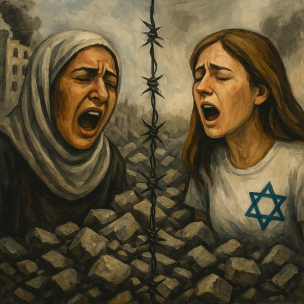

Publicado em 2025-07-04 20:20:51
Há guerras que nos dividem. E há tragédias que nos desafiam a pensar mais fundo, para além das palavras fáceis e das certezas confortáveis. O conflito entre Israel e a Palestina é uma dessas realidades cruéis e complexas. Onde há vítimas, carrascos, manipulações… e demasiada gente a morrer.
Sim, o Hamas continua a disparar foguetes contra Israel. É um grupo armado, islamista, com uma ideologia autoritária e violenta. Controla Gaza com mão de ferro desde 2007. Persegue dissidentes. Usa civis como escudos humanos. E não reconhece o direito de Israel existir.
Sim, o Hamas comete crimes de guerra. E sim, Israel tem o direito de se defender. Tem esse direito como qualquer Estado soberano.
Mas aqui começa o verdadeiro dilema moral e político.
Porque defender-se não é destruir um povo inteiro. E o direito à segurança não é licença para o massacre.
Israel, com um dos exércitos mais avançados do mundo, uma defesa aérea eficaz e o apoio incondicional dos EUA e aliados ocidentais, responde com bombardeamentos sistemáticos, cercos, cortes de energia, destruição de hospitais, escolas, edifícios civis. Milhares e milhares de mortos, a maioria civis, a maioria mulheres e crianças. Famílias inteiras enterradas sob os escombros.
Não se pode chamar a isso “autodefesa”. Chama-se castigo coletivo.
E esse é um crime de guerra. É uma ferida aberta na legalidade internacional. É um insulto à memória da humanidade que jurou “nunca mais” depois de tantos genocídios cometidos no século XX.
A verdade dolorosa é que os palestinianos são reféns duplos: de um grupo extremista que os governa com violência e de uma potência ocupante que os trata como uma ameaça demográfica. Um povo preso entre o fanatismo e a opressão, sem voz nem voto, sem futuro nem esperança.
E nós, no Ocidente?
Fazemos discursos. Enviamos condolências. E armamos quem bombardeia.
Israel: “Queremos viver em segurança. Estamos rodeados por ódio e ameaças. Os foguetes não param. Temos direito a existir.”
Palestina: “Queremos viver com dignidade. Somos bombardeados, cercados, esquecidos. Não temos Estado, nem porto, nem aeroporto. Temos escombros.”
Ambas têm razão. Ambas sofrem. Mas a balança do sofrimento é claramente desigual. E o silêncio cúmplice dos que podiam fazer a diferença já não é neutralidade: é omissão.
No meio do sangue, há uma pergunta que arde:
Quem se atreve a quebrar o ciclo?
Porque enquanto o Hamas dispara e Israel responde com fogo total, é o povo palestiniano que morre aos milhares — e a decência do mundo que morre com ele.
Um artigo da autoria de Francisco Gonçalves in Fragmentos de Caos